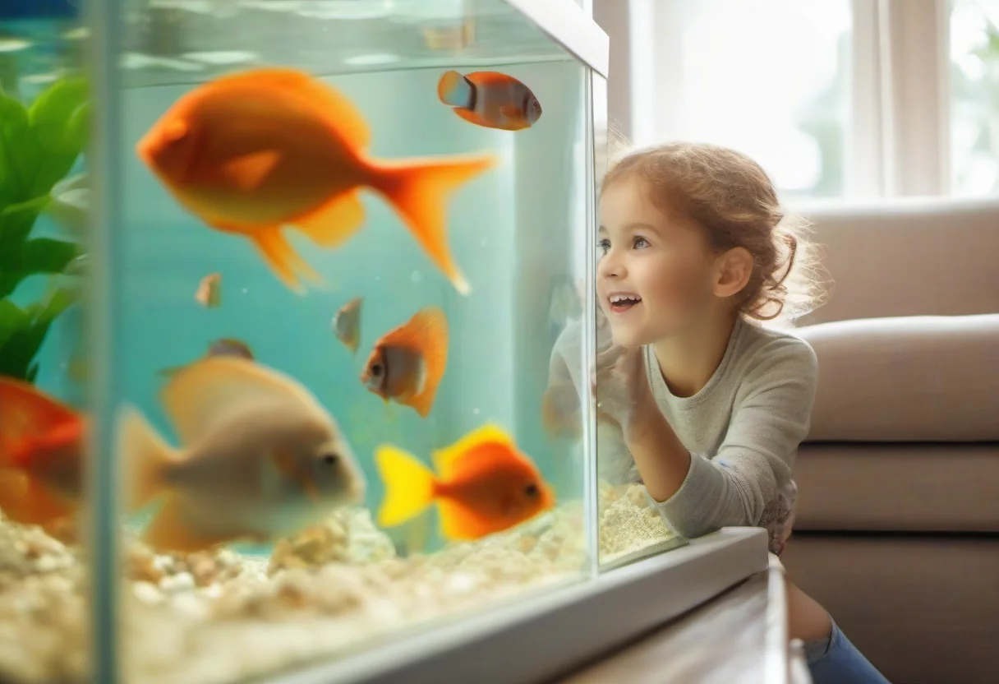

Warum ein Aquarium für Kinder eine wunderbare Bereicherung ist
Viele Eltern fragen sich: Ist ein Aquarium mit Kindern überhaupt sinnvoll? Klare Antwort: Ja – und zwar aus gutem Grund. Ein Aquarium bietet Familien weit mehr als nur ein hübsches Möbelstück im Wohnzimmer. Es ist ein lebendiges Stück Natur, das Kinder Tag für Tag aufs Neue fasziniert. Das ruhige Blubbern des Filters, das sanfte Schaukeln der Pflanzen, das bunte Treiben der Fische – ein Aquarium hat etwas Meditatives und Beruhigendes. Studien haben gezeigt, dass das Beobachten von Aquarien den Blutdruck senkt und Stress abbaut. Davon profitieren nicht nur die Kinder, sondern die ganze Familie.
Gleichzeitig ist Aquaristik ein einzigartiges Lernfeld. Kinder lernen mit einem Aquarium auf ganz natürliche Weise Verantwortung zu übernehmen. Sie verstehen, dass Lebewesen regelmäßige Pflege brauchen, dass Wasserqualität messbar ist und dass jedes Tier in einem empfindlichen Ökosystem lebt. Wer mit einem Aquarium aufwächst, entwickelt ein tiefes Verständnis für Natur, Kreisläufe und die Bedürfnisse anderer Lebewesen. Viele Erwachsene, die sich heute für Biologie, Tiermedizin oder Umweltschutz interessieren, erzählen, dass ihr erstes Aquarium in der Kindheit der Auslöser war. Kind und Aquarium – das passt also hervorragend zusammen, wenn man es richtig angeht.
Ein weiterer Vorteil: Kinder, die mit einem Aquarium aufwachsen, lernen Geduld. Sie können Fische nicht streicheln, nicht mit ihnen spielen wie mit einem Hund und sie nicht zum Laufen bringen. Aber sie können sie beobachten, ihr Verhalten studieren und Veränderungen wahrnehmen. Diese Form der Achtsamkeit ist in unserer schnelllebigen Zeit ein echtes Geschenk. Hinzu kommt: Viele Kinder, die sonst keinen Zugang zu Tieren haben, weil Allergien, Wohnsituation oder Zeitmangel dagegen sprechen, können mit einem Aquarium trotzdem die Freude am Leben mit Tieren erleben.
Ab welchem Alter eignet sich ein Aquarium für Kinder?
Die Frage nach dem richtigen Alter ist berechtigt, denn Aquaristik erfordert ein gewisses Maß an Feinmotorik, Verständnis und Zuverlässigkeit. Grundsätzlich gilt: Ein Aquarium ist ein Projekt der ganzen Familie. Auch wenn die Eltern die Hauptverantwortung tragen, können Kinder je nach Alter bestimmte Aufgaben übernehmen. Schon Kinder ab etwa vier bis sechs Jahren können mit Unterstützung Futter streuen, Fische beobachten und beim Wasserwechsel zuschauen. Sie verstehen mit etwas Anleitung, dass man Fische nicht jagt, nicht ins Wasser greift und den Filter nicht ausstellt.
Ab dem Grundschulalter, also etwa sechs bis zehn Jahren, können Kinder zunehmend eigenständig kleine Aufgaben übernehmen. Sie können nach Anleitung das Futter dosieren, beim Wasserwechsel den Schlauch halten oder Algen von der Frontscheibe wischen. Wichtig ist dabei, dass die Eltern die Aufgaben klar anleiten und regelmäßig kontrollieren. Kinder in diesem Alter sind stolz, wenn sie Verantwortung übernehmen dürfen – und sie lernen dabei spielerisch, was es heißt, für ein anderes Lebewesen zu sorgen.
Altersgerechte Aufgaben für Kinder im Aquarium
Die Aufgabenverteilung sollte sich am Alter und an der Reife des Kindes orientieren. Für Kinder ab vier bis sechs Jahren eignen sich Beobachtungsaufgaben und einfache Handlungen: Fische zählen, die Fütterung gemeinsam mit Mama oder Papa durchführen, beim Wasserwechsel zuschauen und ein Glas Wasser umrühren helfen. Kinder ab acht Jahren können eigenständig Futterportionen abmessen, die Frontscheibe mit einem Magnetschaber reinigen oder den Mulmsauger führen. Jugendliche ab zwölf Jahren sind in der Lage, eigenständig einen Teilwasserwechsel durchzuführen, Filter zu reinigen und Wassertests zu protokollieren. So wachsen Kinder mit dem Aquarium mit und werden Stück für Stück zu verantwortungsvollen Aquarianern.
Sicherheit im Vordergrund: Strom, Glas und Heizung
Sicherheit hat bei einem Aquarium mit Kindern oberste Priorität. Drei Bereiche verdienen besondere Aufmerksamkeit: Strom, Glas und Heizung. Elektrische Geräte wie Filter, Heizung und Beleuchtung laufen in der Nähe von Wasser. Alle Geräte müssen qualitativ hochwertig sein, eine GS- oder VDE-Prüfung haben und mit einem FI-Schutzschalter (Fehlerstromschutzschalter) abgesichert sein. Steckdosenleisten mit Kindersicherung sind Pflicht, Kabel sollten so verlegt werden, dass Kinder nicht daran ziehen oder sie ins Wasser ziehen können. Eine Tropfschleife an jedem Kabel verhindert, dass Wasser am Kabel entlang zur Steckdose läuft.
Das Glas eines Aquariums ist robust, aber nicht unzerstörbar. Schlagen oder Stoßen mit harten Gegenständen kann zu Rissen führen. Das Aquarium sollte daher auf einem stabilen, tragfähigen Unterschrank stehen, der nicht wackelt. Kinder sollten nicht auf den Unterschrank klettern und auch nicht zu fest an die Scheiben klopfen. Die meisten kindgerechten Aquarien haben abgerundete Ecken oder sind als Nano-Becken mit 20 bis 60 Litern klein genug, dass sie gefahrlos im Kinderzimmer stehen können. Größere Becken ab 100 Liter gehören in einen sicheren Wohnbereich.
Die Heizung kann bei Berührung Verbrennungen verursachen. Ein guter Heizstab hat einen Schutzkorb, der die direkte Berührung des heißen Glases verhindert. Kinder sollten den Heizstab nicht aus dem Wasser ziehen – das kann das Glas zum Platzen bringen. Generell gilt: Technik, Kabel und Steckdosen sind tabu für Kinderhände. Die Eltern übernehmen die Technik-Wartung, die Kinder helfen bei der Tierpflege und Beobachtung.
🛒 Kindgerechtes Aquarium-Set für den Start
Komplett-Sets mit Becken, Filter, Licht und Heizung – sicher, robust und perfekt für den Einstieg mit Kindern.
👉 Kinderaquarien bei Amazon entdeckenPflegeleichte Tiere für Familien und Kinder
Nicht jedes Tier ist für ein Kinder-Aquarium geeignet. Empfehlenswert sind robuste, friedliche Arten, die kleinere Pflegefehler verzeihen und spannend zu beobachten sind. Drei Klassiker für Familien mit Kindern sind Guppys, Platys und Garnelen. Guppys sind bunte, lebhafte Zahnkarpfen, die sich in fast jedem Wasser wohlfühlen und sogar Junge bekommen – ein faszinierendes Erlebnis für Kinder, das Aufklärung über Fortpflanzung und Lebendgeburt bietet. Platys sind ähnlich robust und etwas größer, was sie für Kinderhände beim Beobachten gut sichtbar macht. Garnelen wie die beliebten Red Fire oder Blue Dream sind robust, vermehren sich gut und sind faszinierend beim Klettern und Futtersuchen zu beobachten.
Weniger geeignet sind empfindliche Arten wie Diskusfische, die sehr stabile Wasserwerte benötigen, oder große, scheue Fische, die sich tagsüber kaum zeigen. Auch sehr kleine Fische wie Neonbärblinge sind eher für ältere Kinder und erfahrene Aquarianer geeignet, weil sie empfindlich auf Wasserwerte reagieren. Die Faustregel: Je robuster und pflegeleichter ein Tier ist, desto besser eignet es sich für Familien mit Kindern.
Verantwortung lernen mit dem Aquarium
Ein Aquarium ist wie ein kleines Haustier, das niemanden zum Gassi-Gehen zwingt, keine Allergien auslöst und trotzdem täglich Zuwendung braucht. Kinder, die regelmäßig füttern, beim Wasserwechsel helfen und die Wasserwerte im Blick behalten, lernen spielerisch, was Verantwortung bedeutet. Sie verstehen: Wenn ich das Futter vergesse, hungern die Fische. Wenn ich den Filter nicht reinige, leiden die Tiere unter schlechter Wasserqualität. Diese Erfahrung ist wertvoller als jede Ermahnung der Eltern.
Ein praktischer Tipp: Hängen Sie einen kleinen Wochenplan neben das Aquarium. Schreiben Sie täglich die Aufgaben auf, die erledigt werden müssen: Fütterung morgens und abends, dreimal pro Woche Scheibe reinigen, einmal pro Woche Wassertest, alle zwei Wochen Teilwasserwechsel. Ältere Kinder können selbst ankreuzen, jüngere Kinder bekommen Hilfe. So wird das Aquarium zu einem Gemeinschaftsprojekt, an dem die ganze Familie mitwächst. Viele Familien berichten, dass das Aquarium zu einem Ruhepol im hektischen Alltag geworden ist – ein Ort, an dem die Kinder still sitzen, die Fische beobachten und zur Ruhe kommen.
Aquarium als Schul- und Kindergartenprojekt
Kind und Aquarium passt nicht nur zu Hause, sondern auch in pädagogische Einrichtungen. Viele Kindergärten und Schulen haben eigene Aquarien, an denen die Kinder unter Anleitung lernen. Themen wie der Wasserkreislauf, das Nahrungsnetz, die Atmung der Fische, der Lebenszyklus von der Geburt bis zum Tod – all das lässt sich an einem lebendigen Aquarium besser erklären als an jedem Lehrbuch. Besonders die Beobachtung von Jungfischen oder Garnelen-Babys ist für Kinder ein Erlebnis, das sie nicht vergessen werden. Wenn eine Schule ein Aquarium anschaffen möchte, sollte sie auf robuste, pflegeleichte Tiere setzen und ein bis zwei verantwortliche Lehrkräfte benennen, die die Hauptpflege übernehmen. Die Kinder können dann in festen Gruppen kleinere Aufgaben übernehmen.
Das Aquarium als Alternative zu Hund, Katze & Co.
Für viele Familien ist ein Aquarium die ideale Haustier-Alternative. Hunde und Katzen brauchen täglich Auslauf, Urlaubsbetreuung und hinterlassen Haare. Nagetiere riechen, wenn man sie im Kinderzimmer hält. Ein Aquarium hingegen ist sauber, leise und benötigt nur etwa 30 Minuten Pflege pro Woche. Für Familien mit kleinem Apartment, mit Allergikern oder mit unvorhersehbaren Arbeitszeiten ist ein Aquarium eine wunderbare Möglichkeit, trotzdem Tiere im Haus zu haben. Und seien wir ehrlich: Ein Schwarm Guppys oder eine Kolonie Garnelen hat seinen eigenen Charme und macht mindestens genauso viel Freude wie ein Hund – nur eben auf eine ganz andere, sehr beruhigende Art.
🛒 Robust & kindgerecht: Futter & Pflege
Hochwertiges Fischfutter, kindersichere Mulmsauger und Pflege-Sets – ideal für kleine Aquarianer und ihre ersten eigenen Aufgaben.
👉 Futter & Pflege-Sets bei Amazon ansehenPraktische Tipps für den kindgerechten Start
Bevor das erste Aquarium angeschafft wird, sollten Eltern einige grundlegende Entscheidungen treffen. Die Beckengröße richtet sich nach dem verfügbaren Platz und der Erfahrung: Ein Nano-Becken mit 20 bis 30 Litern ist ideal für den ersten Einstieg und kann in einem Kinderzimmer auf einem stabilen Schreibtisch stehen. Größere Becken ab 60 bis 100 Litern bieten mehr Gestaltungsmöglichkeiten und stabilere Wasserwerte, brauchen aber auch mehr Platz und Pflege. Für den Standort gilt: Nicht in direkter Sonneneinstrahlung, nicht neben der Heizung, ruhig und standsicher. Die Technik sollte auf die Beckengröße abgestimmt sein: Filter mit ausreichender Leistung, Heizstab passend zur Wassermenge, Beleuchtung mit Timer.
Eine der wichtigsten Regeln für den Start: das Aquarium vor dem ersten Fischbesatz mindestens drei bis vier Wochen einfahren. In dieser Zeit etabliert sich die nützliche Bakterienkultur im Filter, die später Giftstoffe abbaut. Kinder lernen dabei spielerisch, dass man nicht ungeduldig sein darf – eine wertvolle Lebenserfahrung. Wenn die Wasserwerte stabil sind, können die ersten pflegeleichten Bewohner einziehen. Guppys, Platys, Garnelen und einige Welsarten sind gute Starttiere. Schnecken wie Posthorn- oder Turmdeckelschnecken helfen zusätzlich beim Sauberhalten des Beckens und sind bei Kindern sehr beliebt.
Fazit: Aquarium und Kind – ein Team, das zusammengewächst
Ein Aquarium kann für Kinder und Familien zu einem wunderbaren Begleiter werden. Es bietet täglich neue Einblicke in die Natur, lehrt Verantwortung und Geduld und schafft einen ruhigen Ort der Beobachtung im oft hektischen Familienalltag. Wichtig ist, dass die Eltern die Hauptverantwortung tragen und die Kinder altersgerecht mit eingebunden werden. Mit den richtigen Tieren, der passenden Technik und einer sicheren Aufstellung steht dem gemeinsamen Erlebnis nichts im Wege. Kind und Aquarium – das ist kein Widerspruch, sondern eine Bereicherung für jede Familie.
Mehr zur artgerechten Haltung von Anfängerfischen und welche Tiere sich besonders für Familien eignen, findest du in unserem Artikel Lebendgebärende Zahnkarpfen – Guppys, Platys & Co.. Für die allgemeinen Grundlagen rund um Beckengröße, Technik und Erstbesatz empfehlen wir unseren Einsteiger-Aquarium-Guide.